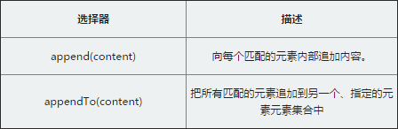
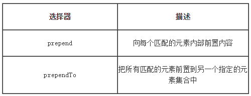
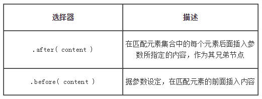
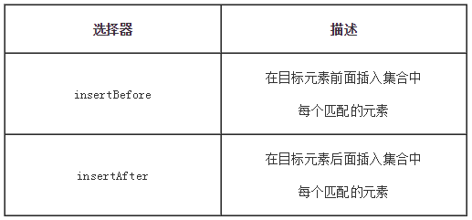

<!DOCTYPE HTML>
<html lang="zh-CN">
<head><meta name="generator" content="Hexo 3.8.0">
    <!--Setting-->
    <meta charset="UTF-8">
    <meta name="viewport" content="width=device-width, user-scalable=no, initial-scale=1.0, maximum-scale=1.0, minimum-scale=1.0">
    <meta http-equiv="X-UA-Compatible" content="IE=Edge,chrome=1">
    <meta http-equiv="Cache-Control" content="no-siteapp">
    <meta http-equiv="Cache-Control" content="no-transform">
    <meta name="renderer" content="webkit|ie-comp|ie-stand">
    <meta name="apple-mobile-web-app-capable" content="王永杰的网络日志">
    <meta name="apple-mobile-web-app-status-bar-style" content="black">
    <meta name="format-detection" content="telephone=no,email=no,adress=no">
    <meta name="browsermode" content="application">
    <meta name="screen-orientation" content="portrait">
    <!-- 自定义视频托管 -->
    <script src="https://player.polyv.net/script/polyvplayer.min.js"></script>
    <link rel="dns-prefetch" href="http://wangyongjie.top">
    <!--SEO-->

    <meta name="keywords" content="jQuery">


    <meta name="description" content="
本篇文章主要总结一下jQuery中DOM节点的创建、插入、删除与替换以及jQuery中丰富的遍历节点的方法。

一、jQueryDOM操作之节点创建与属性的处理JavaScript原生接口创建...">


<meta name="robots" content="all">
<meta name="google" content="all">
<meta name="googlebot" content="all">
<meta name="verify" content="all">

    <!--Title-->


<title>jQuery知识总结之DOM操作 | 王永杰的网络日志</title>


    <link rel="alternate" href="/atom.xml" title="王永杰的网络日志" type="application/atom+xml">


    <link rel="icon" href="/favicon.ico">

    


<link rel="stylesheet" href="/css/bootstrap.min.css?rev=3.3.7">
<link rel="stylesheet" href="/css/font-awesome.min.css?rev=4.5.0">
<link rel="stylesheet" href="/css/style.css?rev=@@hash">


    


    <script>
        var _hmt = _hmt || [];
        (function() {
            var hm = document.createElement("script");
            hm.src = "https://hm.baidu.com/hm.js?f42ffe5fed856accbf91820f137dab46";
            var s = document.getElementsByTagName("script")[0];
            s.parentNode.insertBefore(hm, s);
        })();
    </script>


    

</head>

</html>
<!--[if lte IE 8]>
<style>
    html{ font-size: 1em }
</style>
<![endif]-->
<!--[if lte IE 9]>
<div style="ie">你使用的浏览器版本过低，为了你更好的阅读体验，请更新浏览器的版本或者使用其他现代浏览器，比如Chrome、Firefox、Safari等。</div>
<![endif]-->

<body>
    <header class="main-header" style="background-image:url(http://snippet.shenliyang.com/img/banner.jpg)">
    <div class="main-header-box">
        <a class="header-avatar" href="/" title="wangyongjie">
            
        </a>
        <div class="branding">
        	<!--<h2 class="text-hide">Snippet主题,从未如此简单有趣</h2>-->
            
                <h2> 我是谁 我在哪 我在做什么 </h2>
            
    	</div>
    </div>
</header>
    <nav class="main-navigation">
    <div class="container">
        <div class="row">
            <div class="col-sm-12">
                <div class="navbar-header"><span class="nav-toggle-button collapsed pull-right" data-toggle="collapse" data-target="#main-menu" id="mnav">
                    <span class="sr-only"></span>
                        <i class="fa fa-bars"></i>
                    </span>
                    <a class="navbar-brand" href="http://wangyongjie.top">王永杰的网络日志</a>
                </div>
                <div class="collapse navbar-collapse" id="main-menu">
                    <ul class="menu">
                        
                            <li role="presentation" class="text-center">
                                <a href="/"><i class="fa "></i>首页</a>
                            </li>
                        
                            <li role="presentation" class="text-center">
                                <a href="/categories/前端/"><i class="fa "></i>前端</a>
                            </li>
                        
                            <li role="presentation" class="text-center">
                                <a href="/categories/后端/"><i class="fa "></i>后端</a>
                            </li>
                        
                            <li role="presentation" class="text-center">
                                <a href="/categories/工具/"><i class="fa "></i>工具</a>
                            </li>
                        
                            <li role="presentation" class="text-center">
                                <a href="/webnav/"><i class="fa "></i>导航</a>
                            </li>
                        
                            <li role="presentation" class="text-center">
                                <a href="/archives/"><i class="fa "></i>时间轴</a>
                            </li>
                        
                            <li role="presentation" class="text-center">
                                <a href="/message/"><i class="fa "></i>留言板</a>
                            </li>
                        
                            <li role="presentation" class="text-center">
                                <a href="/categories/生活/"><i class="fa "></i>生活</a>
                            </li>
                        
                            <li role="presentation" class="text-center">
                                <a href="/about/"><i class="fa "></i>关于</a>
                            </li>
                        
                    </ul>
                </div>
            </div>
        </div>
    </div>
</nav>
    <section class="content-wrap">
        <div class="container">
            <div class="row">
                <main class="col-md-8 main-content m-post">
                    <p id="process"></p>
<article class="post">
    <div class="post-head">
        <h1 id="jQuery知识总结之DOM操作">
            
	            jQuery知识总结之DOM操作
            
        </h1>
        <div class="post-meta">
    
        <span class="categories-meta fa-wrap">
            <i class="fa fa-folder-open-o"></i>
            <a class="category-link" href="/categories/前端/">前端</a>
        </span>
    

    
        <span class="fa-wrap">
            <i class="fa fa-tags"></i>
            <span class="tags-meta">
                
                    <a class="tag-link" href="/tags/jQuery/">jQuery</a>
                
            </span>
        </span>
    

    
        
        <span class="fa-wrap">
            <i class="fa fa-clock-o"></i>
            <span class="date-meta">2018/04/25</span>
        </span>
        
    
</div>
            
            
            <p class="fa fa-exclamation-triangle warning">
                本文于<strong>429</strong>天之前发表，文中内容可能已经过时。
            </p>
        
    </div>
    
    <div class="post-body post-content">
        <blockquote>
<p>本篇文章主要总结一下jQuery中DOM节点的创建、插入、删除与替换以及jQuery中丰富的遍历节点的方法。</p>
</blockquote>
<h2 id="一、jQueryDOM操作之节点创建与属性的处理"><a href="#一、jQueryDOM操作之节点创建与属性的处理" class="headerlink" title="一、jQueryDOM操作之节点创建与属性的处理"></a>一、jQueryDOM操作之节点创建与属性的处理</h2><p>JavaScript原生接口创建节点，在处理上是非常复杂与繁琐的，jQuery简化了这个过程。</p>
<p><strong>创建元素节点</strong>：</p>
<p>常见的就是直接把这个节点的结构给通过HTML标记字符串描述出来，通过$()函数处理，$(“html结构”)</p>
<figure class="highlight javascript"><table><tr><td class="gutter"><pre><span class="line">1</span><br></pre></td><td class="code"><pre><span class="line">$(<span class="string">"&lt;div&gt;&lt;/div&gt;"</span>)</span><br></pre></td></tr></table></figure>
<p><strong>创建带文本节点</strong>：</p>
<p>与创建元素节点类似，直接把文本内容一并描述</p>
<figure class="highlight javascript"><table><tr><td class="gutter"><pre><span class="line">1</span><br></pre></td><td class="code"><pre><span class="line">$(<span class="string">"&lt;div&gt;我是文本节点&lt;/div&gt;"</span>)</span><br></pre></td></tr></table></figure>
<p><strong>创建带属性节点</strong>：</p>
<p>与创建元素节点同样的方式</p>
<figure class="highlight javascript"><table><tr><td class="gutter"><pre><span class="line">1</span><br></pre></td><td class="code"><pre><span class="line">$(<span class="string">"&lt;div id='test' class='aaron'&gt;我是文本节点&lt;/div&gt;"</span>)</span><br></pre></td></tr></table></figure>
<p>我们通过jQuery把上一届的代码改造一下，如右边代码所示</p>
<p>一条一句就搞定了，跟写HTML结构方式是一样的</p>
<figure class="highlight javascript"><table><tr><td class="gutter"><pre><span class="line">1</span><br></pre></td><td class="code"><pre><span class="line">$(<span class="string">"&lt;div class='right'&gt;&lt;div class='aaron'&gt;动态创建DIV元素节点&lt;/div&gt;&lt;/div&gt;"</span>)</span><br></pre></td></tr></table></figure>
<p>这就是jQuery创建节点的方式，让我们保留HTML的结构书写方式，非常的简单、方便和灵活</p>
<h2 id="二、jQueryDOM操作之DOM内部插入节点"><a href="#二、jQueryDOM操作之DOM内部插入节点" class="headerlink" title="二、jQueryDOM操作之DOM内部插入节点"></a>二、jQueryDOM操作之DOM内部插入节点</h2><blockquote>
<p>$().append()与$().appendTo($())</p>
</blockquote>
<p>创建的元素后，将当作页面某一个元素的子元素放到其内部。针对这样的处理，jQuery定义了2个操作的方法</p>
<p></p>
<p>append：这个操作与对指定的元素执行原生的appendChild方法，将它们添加到文档中的情况类似。</p>
<p>appendTo：实际上，使用这个方法是颠倒了常规的$(A).append(B)的操作，即不是把B追加到A中，而是把A追加到B中。</p>
<p>简单的总结就是：</p>
<ol>
<li>.append()和.appendTo()两种方法功能相同，主要的不同是语法——内容和目标的位置不同</li>
<li>append()前面是被插入的对象，后面是要在对象内插入的元素内容</li>
<li>appendTo()前面是要插入的元素内容，而后面是被插入的对象</li>
</ol>
<h2 id="三、jQueryDOM操作之DOM内部插入节点"><a href="#三、jQueryDOM操作之DOM内部插入节点" class="headerlink" title="三、jQueryDOM操作之DOM内部插入节点"></a>三、jQueryDOM操作之DOM内部插入节点</h2><blockquote>
<p>$().prepend()与$().prependTo($())</p>
</blockquote>
<p>在元素内部进行操作的方法，除了在被选元素的结尾（仍然在内部）通过append与appendTo插入指定内容外，相应的还可以在被选元素之前插入，jQuery提供的方法是prepend与prependTo</p>
<p>选择器的描述：</p>
<p></p>
<p>prepend与prependTo的使用及区别：</p>
<ul>
<li>.prepend()方法将指定元素插入到匹配元素里面作为它的第一个子元素 (如果要作为最后一个子元素插入用.append()).</li>
<li>.prepend()和.prependTo()实现同样的功能，主要的不同是语法，插入的内容和目标的位置不同</li>
<li>对于.prepend() 而言，选择器表达式写在方法的前面，作为待插入内容的容器，将要被插入的内容作为方法的参数</li>
<li>而.prependTo() 正好相反，将要被插入的内容写在方法的前面，可以是选择器表达式或动态创建的标记，待插入内容的容器作为参数。</li>
</ul>
<p>这里总结下内部操作四个方法的区别：</p>
<ul>
<li>append()向每个匹配的元素内部追加内容</li>
<li>prepend()向每个匹配的元素内部前置内容</li>
<li>appendTo()把所有匹配的元素追加到另一个指定元素的集合中</li>
<li>prependTo()把所有匹配的元素前置到另一个指定的元素集合中</li>
</ul>
<h2 id="四、jQueryDOM操作之DOM外部插入节点"><a href="#四、jQueryDOM操作之DOM外部插入节点" class="headerlink" title="四、jQueryDOM操作之DOM外部插入节点"></a>四、jQueryDOM操作之DOM外部插入节点</h2><blockquote>
<p>$().before()与$().after()</p>
</blockquote>
<p>节点与节点之前有各种关系，除了父子，祖辈关系，还可以是兄弟关系。Query引入了2个方法，可以用来在匹配I的元素前后插入内容。</p>
<p>选择器描述：</p>
<p></p>
<ul>
<li>before与after都是用来对相对选中元素外部增加相邻的兄弟节点</li>
<li>2个方法都是都可以接收HTML字符串，DOM 元素，元素数组，或者jQuery对象，用来插入到集合中每个匹配元素的前面或者后面</li>
<li>2个方法都支持多个参数传递after(div1,div2,….) 可以参考右边案例代码</li>
</ul>
<p>注意点：</p>
<ul>
<li>after向元素的后边添加html代码，如果元素后面有元素了，那将后面的元素后移，然后将html代码插入</li>
<li>before向元素的前边添加html代码，如果元素前面有元素了，那将前面的元素前移，然后将html代码插</li>
</ul>
<h2 id="五、jQueryDOM操作之外部插入节点"><a href="#五、jQueryDOM操作之外部插入节点" class="headerlink" title="五、jQueryDOM操作之外部插入节点"></a>五、jQueryDOM操作之外部插入节点</h2><blockquote>
<p>insertAfter($())与insertBefore($())</p>
</blockquote>
<p>与内部插入处理一样，jQuery由于内容目标的位置不同，然增加了2个新的方法insertAfter与insertBefore</p>
<p></p>
<ul>
<li>.before()和.insertBefore()实现同样的功能。主要的区别是语法——内容和目标的位置。 对于before()选择表达式在函数前面，内容作为参数，而.insertBefore()刚好相反，内容在方法前面，它将被放在参数里元素的前面</li>
<li>.after()和.insertAfter() 实现同样的功能。主要的不同是语法——特别是（插入）内容和目标的位置。 对于after()选择表达式在函数的前面，参数是将要插入的内容。对于 .insertAfter(), 刚好相反，内容在方法前面，它将被放在参数里元素的后面</li>
<li>before、after与insertBefore。insertAfter的除了目标与位置的不同外，后面的不支持多参数处理</li>
</ul>
<p>注意事项：</p>
<ul>
<li>insertAfter将JQuery封装好的元素插入到指定元素的后面，如果元素后面有元素了，那将后面的元素后移，然后将JQuery对象插入；</li>
<li>insertBefore将JQuery封装好的元素插入到指定元素的前面，如果元素前面有元素了，那将前面的元素前移，然后将JQuery对象插入；</li>
</ul>
<h2 id="六、jQueryDOM节点操作之删除"><a href="#六、jQueryDOM节点操作之删除" class="headerlink" title="六、jQueryDOM节点操作之删除"></a>六、jQueryDOM节点操作之删除</h2><blockquote>
<p>empty()</p>
</blockquote>
<p>要移除页面上节点是开发者常见的操作，jQuery提供了几种不同的方法用来处理这个问题，这里我们开仔细了解下empty方法</p>
<p>empty 顾名思义，清空方法，但是与删除又有点不一样，因为它只移除了 指定元素中的所有子节点。</p>
<p>这个方法不仅移除子元素（和其他后代元素），同样移除元素里的文本。因为，根据说明，元素里任何文本字符串都被看做是该元素的子节点。请看下面的HTML：</p>
<figure class="highlight html"><table><tr><td class="gutter"><pre><span class="line">1</span><br></pre></td><td class="code"><pre><span class="line"><span class="tag">&lt;<span class="name">div</span> <span class="attr">class</span>=<span class="string">"hello"</span>&gt;</span><span class="tag">&lt;<span class="name">p</span>&gt;</span>测试用文本<span class="tag">&lt;/<span class="name">p</span>&gt;</span><span class="tag">&lt;/<span class="name">div</span>&gt;</span></span><br></pre></td></tr></table></figure>
<p>如果我们通过empty方法移除里面div的所有元素，它只是清空内部的html代码，但是标记仍然留在DOM中</p>
<figure class="highlight javascript"><table><tr><td class="gutter"><pre><span class="line">1</span><br><span class="line">2</span><br><span class="line">3</span><br><span class="line">4</span><br><span class="line">5</span><br></pre></td><td class="code"><pre><span class="line"><span class="comment">//通过empty处理</span></span><br><span class="line">$(<span class="string">'.hello'</span>).empty()</span><br><span class="line"></span><br><span class="line"><span class="comment">//结果：&lt;p&gt;测试用文本&lt;/p&gt;被移除，但匹配的元素还留在文档中</span></span><br><span class="line">&lt;div <span class="class"><span class="keyword">class</span></span>=<span class="string">"hello"</span>&gt;<span class="xml"><span class="tag">&lt;/<span class="name">div</span>&gt;</span></span></span><br></pre></td></tr></table></figure>
<h2 id="七、jQueryDOM节点操作之删除"><a href="#七、jQueryDOM节点操作之删除" class="headerlink" title="七、jQueryDOM节点操作之删除"></a>七、jQueryDOM节点操作之删除</h2><blockquote>
<p>remove()的有参用法和无参用法</p>
</blockquote>
<p>remove与empty一样，都是移除元素的方法，但是remove会将元素自身移除，同时也会移除元素内部的一切，包括绑定的事件及与该元素相关的jQuery数据。</p>
<p>该方法不会把匹配的元素从 jQuery 对象中删除，因而可以在将来再使用这些匹配的元素。  </p>
<p>例如一段节点，绑定点击事件</p>
<figure class="highlight html"><table><tr><td class="gutter"><pre><span class="line">1</span><br><span class="line">2</span><br></pre></td><td class="code"><pre><span class="line"><span class="tag">&lt;<span class="name">div</span> <span class="attr">class</span>=<span class="string">"hello"</span>&gt;</span><span class="tag">&lt;<span class="name">p</span>&gt;</span>测试文本<span class="tag">&lt;/<span class="name">p</span>&gt;</span><span class="tag">&lt;/<span class="name">div</span>&gt;</span></span><br><span class="line">$('.hello').on("click",fn)</span><br></pre></td></tr></table></figure>
<p>如果不通过remove方法删除这个节点其实也很简单，但是同时需要把事件给销毁掉，这里是为了防止”内存泄漏”，前端开发一定要注意，绑了多少事件，不用的时候一定要记得销毁</p>
<p>通过remove方法移除div及其内部所有元素，remove内部会自动操作事件销毁方法，所以使用使用起来非常简单</p>
<figure class="highlight html"><table><tr><td class="gutter"><pre><span class="line">1</span><br><span class="line">2</span><br><span class="line">3</span><br><span class="line">4</span><br></pre></td><td class="code"><pre><span class="line">//通过remove处理</span><br><span class="line">$('.hello').remove()</span><br><span class="line">//结果：<span class="tag">&lt;<span class="name">div</span> <span class="attr">class</span>=<span class="string">"hello"</span>&gt;</span><span class="tag">&lt;<span class="name">p</span>&gt;</span>慕课网<span class="tag">&lt;/<span class="name">p</span>&gt;</span><span class="tag">&lt;/<span class="name">div</span>&gt;</span> 全部被移除</span><br><span class="line">//节点不存在了,同事事件也会被销毁</span><br></pre></td></tr></table></figure>
<p><strong>remove表达式参数：</strong></p>
<p>remove比empty好用的地方就是可以传递一个选择器表达式用来过滤将被移除的匹配元素集合，可以选择性的删除指定的节点</p>
<figure class="highlight javascript"><table><tr><td class="gutter"><pre><span class="line">1</span><br></pre></td><td class="code"><pre><span class="line">$(<span class="string">"p"</span>).remove(<span class="string">":contains('3')"</span>)</span><br></pre></td></tr></table></figure>
<h2 id="八、DOM节点删除之empty和remove区别"><a href="#八、DOM节点删除之empty和remove区别" class="headerlink" title="八、DOM节点删除之empty和remove区别"></a>八、DOM节点删除之empty和remove区别</h2><p>要用到移除指定元素的时候，jQuery提供了empty()与remove([expr])二个方法，两个都是删除元素，但是两者还是有区别</p>
<p><strong>empty方法</strong></p>
<ul>
<li>严格地讲，empty()方法并不是删除节点，而是清空节点，它能清空元素中的所有后代节点</li>
<li>empty不能删除自己本身这个节点</li>
</ul>
<p><strong>remove方法</strong></p>
<ul>
<li>该节点与该节点所包含的所有后代节点将同时被删除</li>
<li>提供传递一个筛选的表达式，删除指定合集中的元素</li>
</ul>
<h2 id="九、jQueryDOM节点操作之删除"><a href="#九、jQueryDOM节点操作之删除" class="headerlink" title="九、jQueryDOM节点操作之删除"></a>九、jQueryDOM节点操作之删除</h2><blockquote>
<p>detach()</p>
</blockquote>
<p>如果我们希望临时删除页面上的节点，但是又不希望节点上的数据与事件丢失，并且能在下一个时间段让这个删除的节点显示到页面，这时候就可以使用detach方法来处理</p>
<p>detach从字面上就很容易理解。让一个web元素托管。即从当前页面中移除该元素，但保留这个元素的内存模型对象。</p>
<p>来看看jquery官方文档的解释：</p>
<p>这个方法不会把匹配的元素从jQuery对象中删除，因而可以在将来再使用这些匹配的元素。而且与remove()不同的是，所有绑定的事件、附加的数据等都会保留下来。<br>$(“div”).detach()这一句会移除对象，仅仅是显示效果没有了。但是内存中还是存在的。当你append之后，又重新回到了文档流中。就又显示出来了。  </p>
<p>当然这里要特别注意，detach方法是JQuery特有的，所以它只能处理通过JQuery的方法绑定的事件或者数据。</p>
<figure class="highlight html"><table><tr><td class="gutter"><pre><span class="line">1</span><br><span class="line">2</span><br><span class="line">3</span><br><span class="line">4</span><br><span class="line">5</span><br><span class="line">6</span><br><span class="line">7</span><br><span class="line">8</span><br><span class="line">9</span><br><span class="line">10</span><br><span class="line">11</span><br><span class="line">12</span><br><span class="line">13</span><br><span class="line">14</span><br><span class="line">15</span><br><span class="line">16</span><br><span class="line">17</span><br><span class="line">18</span><br><span class="line">19</span><br><span class="line">20</span><br><span class="line">21</span><br><span class="line">22</span><br><span class="line">23</span><br><span class="line">24</span><br><span class="line">25</span><br></pre></td><td class="code"><pre><span class="line"><span class="tag">&lt;<span class="name">body</span>&gt;</span></span><br><span class="line">    <span class="tag">&lt;<span class="name">p</span>&gt;</span>P元素1，默认给绑定一个点击事件<span class="tag">&lt;/<span class="name">p</span>&gt;</span></span><br><span class="line">    <span class="tag">&lt;<span class="name">p</span>&gt;</span>P元素2，默认给绑定一个点击事件<span class="tag">&lt;/<span class="name">p</span>&gt;</span></span><br><span class="line">    <span class="tag">&lt;<span class="name">button</span> <span class="attr">id</span>=<span class="string">"bt1"</span>&gt;</span>点击删除 p 元素<span class="tag">&lt;/<span class="name">button</span>&gt;</span></span><br><span class="line">    <span class="tag">&lt;<span class="name">button</span> <span class="attr">id</span>=<span class="string">"bt2"</span>&gt;</span>点击移动 p 元素<span class="tag">&lt;/<span class="name">button</span>&gt;</span></span><br><span class="line">    <span class="tag">&lt;<span class="name">script</span> <span class="attr">type</span>=<span class="string">"text/javascript"</span>&gt;</span><span class="undefined"></span></span><br><span class="line"><span class="javascript">    $(<span class="string">'p'</span>).click(<span class="function"><span class="keyword">function</span>(<span class="params">e</span>) </span>&#123;</span></span><br><span class="line"><span class="undefined">        alert(e.target.innerHTML)</span></span><br><span class="line"><span class="undefined">    &#125;)</span></span><br><span class="line"><span class="javascript">    <span class="keyword">var</span> p;</span></span><br><span class="line"><span class="javascript">    $(<span class="string">"#bt1"</span>).click(<span class="function"><span class="keyword">function</span>(<span class="params"></span>) </span>&#123;</span></span><br><span class="line"><span class="javascript">        <span class="keyword">if</span> (!$(<span class="string">"p"</span>).length) <span class="keyword">return</span>; <span class="comment">//去重,不然连续点两次删除，第二次删除会保存undefined在p里·</span></span></span><br><span class="line"><span class="javascript">        <span class="comment">//通过detach方法删除元素</span></span></span><br><span class="line"><span class="javascript">        <span class="comment">//只是页面不可见，但是这个节点还是保存在内存中</span></span></span><br><span class="line"><span class="javascript">        <span class="comment">//数据与事件都不会丢失</span></span></span><br><span class="line"><span class="javascript">        p = $(<span class="string">"p"</span>).detach()</span></span><br><span class="line"><span class="undefined">    &#125;);</span></span><br><span class="line"><span class="undefined"></span></span><br><span class="line"><span class="javascript">    $(<span class="string">"#bt2"</span>).click(<span class="function"><span class="keyword">function</span>(<span class="params"></span>) </span>&#123;</span></span><br><span class="line"><span class="javascript">        <span class="comment">//把p元素在添加到页面中</span></span></span><br><span class="line"><span class="javascript">        <span class="comment">//事件还是存在</span></span></span><br><span class="line"><span class="javascript">        $(<span class="string">"body"</span>).append(p);</span></span><br><span class="line"><span class="undefined">    &#125;);</span></span><br><span class="line"><span class="undefined">    </span><span class="tag">&lt;/<span class="name">script</span>&gt;</span></span><br><span class="line"><span class="tag">&lt;/<span class="name">body</span>&gt;</span></span><br></pre></td></tr></table></figure>
<h2 id="十、jQueryDOM节点删除"><a href="#十、jQueryDOM节点删除" class="headerlink" title="十、jQueryDOM节点删除"></a>十、jQueryDOM节点删除</h2><blockquote>
<p>detach()和remove()区别</p>
</blockquote>
<p>JQuery是一个很大强的工具库，在工作开发中，有些方法因为不常用到，或是没有注意到而被我们忽略。</p>
<p>remove()和detach()可能就是其中的一个，可能remove()我们用得比较多，而detach()就可能会很少了</p>
<p>通过一张对比表来解释2个方法之间的不同</p>
<table>
<thead>
<tr>
<th>col 1</th>
<th>col 2</th>
<th>col 3</th>
<th>col 4                  </th>
</tr>
</thead>
<tbody>
<tr>
<td>方法名</td>
<td>参数</td>
<td>事件及数据是否也被移除</td>
<td>元素自身是否被移除              </td>
</tr>
<tr>
<td>remove</td>
<td>支持选择器表达</td>
<td>是</td>
<td>是（无参数时），有参数时要根据参数所涉及的范围</td>
</tr>
<tr>
<td>detach</td>
<td>参数同remove</td>
<td>否</td>
<td>情况同remove              </td>
</tr>
</tbody>
</table>
<p><strong>remove：</strong>移除节点</p>
<ul>
<li>无参数，移除自身整个节点以及该节点的内部的所有节点，包括节点上事件与数据</li>
<li>有参数，移除筛选出的节点以及该节点的内部的所有节点，包括节点上事件与数据</li>
</ul>
<p><strong>detach：</strong>移除节点</p>
<ul>
<li>移除的处理与remove一致</li>
<li>与remove()不同的是，所有绑定的事件、附加的数据等都会保留下来</li>
<li>例如：$(“p”).detach()这一句会移除对象，仅仅是显示效果没有了。但是内存中还是存在的。当你append之后，又重新回到了文档流中。就又显示出来了。</li>
</ul>
<h2 id="十一、jQueryDOM节点操作之节点复制"><a href="#十一、jQueryDOM节点操作之节点复制" class="headerlink" title="十一、jQueryDOM节点操作之节点复制"></a>十一、jQueryDOM节点操作之节点复制</h2><blockquote>
<p>.clone()</p>
</blockquote>
<p>克隆节点是DOM的常见操作，jQuery提供一个clone方法，专门用于处理dom的克隆</p>
<p><code>.clone()</code>方法深度 复制所有匹配的元素集合，包括所有匹配元素、匹配元素的下级元素、文字节点。</p>
<p>clone方法比较简单就是克隆节点，但是需要注意，如果节点有事件或者数据之类的其他处理，我们需要通过clone(ture)传递一个布尔值ture用来指定，这样不仅仅只是克隆单纯的节点结构，还要把附带的事件与数据给一并克隆了</p>
<p>例如：</p>
<figure class="highlight html"><table><tr><td class="gutter"><pre><span class="line">1</span><br><span class="line">2</span><br></pre></td><td class="code"><pre><span class="line">HTML部分</span><br><span class="line"><span class="tag">&lt;<span class="name">div</span>&gt;</span><span class="tag">&lt;/<span class="name">div</span>&gt;</span></span><br></pre></td></tr></table></figure>
<figure class="highlight javascript"><table><tr><td class="gutter"><pre><span class="line">1</span><br><span class="line">2</span><br></pre></td><td class="code"><pre><span class="line">JavaScript部分</span><br><span class="line">$(<span class="string">"div"</span>).on(<span class="string">'click'</span>, <span class="function"><span class="keyword">function</span>(<span class="params"></span>) </span>&#123;<span class="comment">//执行操作&#125;)</span></span><br></pre></td></tr></table></figure>
<figure class="highlight javascript"><table><tr><td class="gutter"><pre><span class="line">1</span><br><span class="line">2</span><br></pre></td><td class="code"><pre><span class="line"><span class="comment">//clone处理一</span></span><br><span class="line">$(<span class="string">"div"</span>).clone()   <span class="comment">//只克隆了结构，事件丢失</span></span><br></pre></td></tr></table></figure>
<figure class="highlight javascript"><table><tr><td class="gutter"><pre><span class="line">1</span><br><span class="line">2</span><br></pre></td><td class="code"><pre><span class="line"><span class="comment">//clone处理二</span></span><br><span class="line">$(<span class="string">"div"</span>).clone(<span class="literal">true</span>) <span class="comment">//结构、事件与数据都克隆</span></span><br></pre></td></tr></table></figure>
<p>使用上就是这样简单，使用克隆的我们需要额外知道的细节：</p>
<ul>
<li>clone()方法时，在将它插入到文档之前，我们可以修改克隆后的元素或者元素内容，如右边代码我 $(this).clone().css(‘color’,’red’) 增加了一个颜色</li>
<li>通过传递true，将所有绑定在原始元素上的事件处理函数复制到克隆元素上</li>
<li>clone()方法是jQuery扩展的，只能处理通过jQuery绑定的事件与数据</li>
<li><u><strong>元素数据（data）内对象和数组不会被复制，将继续被克隆元素和原始元素共享。深复制的所有数据，需要手动复制每一个</strong></u></li>
</ul>
<h2 id="十二、jQueryDOM节点操作之节点替换"><a href="#十二、jQueryDOM节点操作之节点替换" class="headerlink" title="十二、jQueryDOM节点操作之节点替换"></a>十二、jQueryDOM节点操作之节点替换</h2><blockquote>
<p>replaceWith()和replaceAll()</p>
</blockquote>
<p><strong>.replaceWith( newContent )</strong>：用提供的内容替换集合中所有匹配的元素并且返回被删除元素的集合</p>
<p>简单来说：用$()选择节点A，调用replaceWith方法，传入一个新的内容B（HTML字符串，DOM元素，或者jQuery对象）用来替换选中的节点A</p>
<p>看个简单的例子：一段HTML代码</p>
<figure class="highlight html"><table><tr><td class="gutter"><pre><span class="line">1</span><br><span class="line">2</span><br><span class="line">3</span><br><span class="line">4</span><br><span class="line">5</span><br></pre></td><td class="code"><pre><span class="line"><span class="tag">&lt;<span class="name">div</span>&gt;</span></span><br><span class="line">    <span class="tag">&lt;<span class="name">p</span>&gt;</span>第一段<span class="tag">&lt;/<span class="name">p</span>&gt;</span></span><br><span class="line">    <span class="tag">&lt;<span class="name">p</span>&gt;</span>第二段<span class="tag">&lt;/<span class="name">p</span>&gt;</span></span><br><span class="line">    <span class="tag">&lt;<span class="name">p</span>&gt;</span>第三段<span class="tag">&lt;/<span class="name">p</span>&gt;</span></span><br><span class="line"><span class="tag">&lt;/<span class="name">div</span>&gt;</span></span><br></pre></td></tr></table></figure>
<p>替换第二段的节点与内容</p>
<figure class="highlight javascript"><table><tr><td class="gutter"><pre><span class="line">1</span><br></pre></td><td class="code"><pre><span class="line">$(<span class="string">"p:eq(1)"</span>).replaceWith(<span class="string">'&lt;a style="color:red"&gt;替换第二段的内容&lt;/a&gt;'</span>)</span><br></pre></td></tr></table></figure>
<p>通过jQuery筛选出第二个p元素，调用replaceWith进行替换，结果如下</p>
<figure class="highlight html"><table><tr><td class="gutter"><pre><span class="line">1</span><br><span class="line">2</span><br><span class="line">3</span><br><span class="line">4</span><br><span class="line">5</span><br></pre></td><td class="code"><pre><span class="line"><span class="tag">&lt;<span class="name">div</span>&gt;</span></span><br><span class="line">    <span class="tag">&lt;<span class="name">p</span>&gt;</span>第一段<span class="tag">&lt;/<span class="name">p</span>&gt;</span></span><br><span class="line">    <span class="tag">&lt;<span class="name">a</span> <span class="attr">style</span>=<span class="string">"color:red"</span>&gt;</span>替换第二段的内容<span class="tag">&lt;/<span class="name">a</span>&gt;</span>'</span><br><span class="line">    <span class="tag">&lt;<span class="name">p</span>&gt;</span>第三段<span class="tag">&lt;/<span class="name">p</span>&gt;</span></span><br><span class="line"><span class="tag">&lt;/<span class="name">div</span>&gt;</span></span><br></pre></td></tr></table></figure>
<p><strong>.replaceAll( target )：</strong>用集合的匹配元素替换每个目标元素</p>
<p>.replaceAll()和.replaceWith()功能类似，但是目标和源相反，用上述的HTML结构，我们用replaceAll处理</p>
<figure class="highlight javascript"><table><tr><td class="gutter"><pre><span class="line">1</span><br></pre></td><td class="code"><pre><span class="line">$(<span class="string">'&lt;a style="color:red"&gt;替换第二段的内容&lt;/a&gt;'</span>).replaceAll(<span class="string">'p:eq(1)'</span>)</span><br></pre></td></tr></table></figure>
<p>总结：</p>
<ul>
<li>.replaceAll()和.replaceWith()功能类似，主要是目标和源的位置区别</li>
<li>.replaceWith()与.replaceAll() 方法会删除与节点相关联的所有数据和事件处理程序</li>
<li>.replaceWith()方法，和大部分其他jQuery方法一样，返回jQuery对象，所以可以和其他方法链接使用</li>
<li>.replaceWith()方法返回的jQuery对象引用的是替换前的节点，而不是通过replaceWith/replaceAll方法替换后的节点</li>
</ul>
<h2 id="十三、jQueryDOM节点操作之包裹节点"><a href="#十三、jQueryDOM节点操作之包裹节点" class="headerlink" title="十三、jQueryDOM节点操作之包裹节点"></a>十三、jQueryDOM节点操作之包裹节点</h2><blockquote>
<p>wrap()</p>
</blockquote>
<p>如果要将元素用其他元素包裹起来，也就是给它增加一个父元素，针对这样的处理，JQuery提供了一个wrap方法</p>
<p><strong>.wrap( wrappingElement ：</strong>在集合中匹配的每个元素周围包裹一个HTML结构</p>
<p>简单的看一段代码：</p>
<figure class="highlight html"><table><tr><td class="gutter"><pre><span class="line">1</span><br></pre></td><td class="code"><pre><span class="line"><span class="tag">&lt;<span class="name">p</span>&gt;</span>p元素<span class="tag">&lt;/<span class="name">p</span>&gt;</span></span><br></pre></td></tr></table></figure>
<p>给p元素增加一个div包裹</p>
<figure class="highlight javascript"><table><tr><td class="gutter"><pre><span class="line">1</span><br></pre></td><td class="code"><pre><span class="line">$(<span class="string">'p'</span>).wrap(<span class="string">'&lt;div&gt;&lt;/div&gt;'</span>)</span><br></pre></td></tr></table></figure>
<p>最后的结构，p元素增加了一个父div的结构</p>
<figure class="highlight html"><table><tr><td class="gutter"><pre><span class="line">1</span><br><span class="line">2</span><br><span class="line">3</span><br></pre></td><td class="code"><pre><span class="line"><span class="tag">&lt;<span class="name">div</span>&gt;</span></span><br><span class="line">    <span class="tag">&lt;<span class="name">p</span>&gt;</span>p元素<span class="tag">&lt;/<span class="name">p</span>&gt;</span></span><br><span class="line"><span class="tag">&lt;/<span class="name">div</span>&gt;</span></span><br></pre></td></tr></table></figure>
<p><strong>.wrap( function )：</strong>一个回调函数，返回用于包裹匹配元素的 HTML 内容或 jQuery 对象</p>
<p>使用后的效果与直接传递参数是一样，只不过可以把代码写在函数体内部，写法不同而已</p>
<p>以第一个案例为例：</p>
<figure class="highlight javascript"><table><tr><td class="gutter"><pre><span class="line">1</span><br><span class="line">2</span><br><span class="line">3</span><br></pre></td><td class="code"><pre><span class="line">$(<span class="string">'p'</span>).wrap(<span class="function"><span class="keyword">function</span>(<span class="params"></span>) </span>&#123;</span><br><span class="line">    <span class="keyword">return</span> <span class="string">'&lt;div&gt;&lt;/div&gt;'</span>;   <span class="comment">//与第一种类似，只是写法不一样</span></span><br><span class="line">&#125;)</span><br></pre></td></tr></table></figure>
<p><strong>注意：</strong></p>
<p>.wrap()函数可以接受任何字符串或对象，可以传递给$()工厂函数来指定一个DOM结构。这种结构可以嵌套了好几层深，但应该只包含一个核心的元素。每个匹配的元素都会被这种结构包裹。该方法返回原始的元素集，以便之后使用链式方法。</p>
<p>我们可以通过wrap方法给选中元素增加一个包裹的父元素。相反，如果删除选中元素的父元素要如何处理 ?  </p>
<h2 id="十四、jQueryDOM节点操作之包裹多个节点"><a href="#十四、jQueryDOM节点操作之包裹多个节点" class="headerlink" title="十四、jQueryDOM节点操作之包裹多个节点"></a>十四、jQueryDOM节点操作之包裹多个节点</h2><blockquote>
<p>wrapAll()</p>
</blockquote>
<p>wrap是针对单个dom元素处理，如果要将<strong>集合中</strong>的元素用其他元素包裹起来，也就是给他们增加一个父元素，针对这样的处理，JQuery提供了一个wrapAll方法</p>
<p><strong>.wrapAll( wrappingElement )：</strong>给集合中匹配的元素增加一个外面包裹HTML结构</p>
<p>简单的看一段代码：</p>
<figure class="highlight html"><table><tr><td class="gutter"><pre><span class="line">1</span><br><span class="line">2</span><br><span class="line">3</span><br><span class="line">4</span><br><span class="line">5</span><br><span class="line">6</span><br><span class="line">7</span><br></pre></td><td class="code"><pre><span class="line"><span class="tag">&lt;<span class="name">div</span> <span class="attr">id</span>=<span class="string">"demo1"</span>&gt;</span></span><br><span class="line">    <span class="tag">&lt;<span class="name">p</span>&gt;</span>元素1<span class="tag">&lt;/<span class="name">p</span>&gt;</span></span><br><span class="line"><span class="tag">&lt;/<span class="name">div</span>&gt;</span></span><br><span class="line"><span class="tag">&lt;<span class="name">div</span> <span class="attr">id</span>=<span class="string">"demo2"</span>&gt;</span></span><br><span class="line">    <span class="tag">&lt;<span class="name">p</span>&gt;</span>元素2<span class="tag">&lt;/<span class="name">p</span>&gt;</span></span><br><span class="line">    <span class="tag">&lt;<span class="name">p</span>&gt;</span>元素3<span class="tag">&lt;/<span class="name">p</span>&gt;</span></span><br><span class="line"><span class="tag">&lt;/<span class="name">div</span>&gt;</span></span><br></pre></td></tr></table></figure>
<p>给所有p元素增加一个div包裹</p>
<figure class="highlight javascript"><table><tr><td class="gutter"><pre><span class="line">1</span><br></pre></td><td class="code"><pre><span class="line">$(<span class="string">'p'</span>).wrapAll(<span class="string">'&lt;div&gt;&lt;/div&gt;'</span>)</span><br></pre></td></tr></table></figure>
<p>最后的结构，3个匹配的P元素会被拉取成为第一个匹配的p元素的相邻兄弟元素，并增加了一个父div的结构</p>
<figure class="highlight html"><table><tr><td class="gutter"><pre><span class="line">1</span><br><span class="line">2</span><br><span class="line">3</span><br><span class="line">4</span><br><span class="line">5</span><br><span class="line">6</span><br><span class="line">7</span><br><span class="line">8</span><br><span class="line">9</span><br></pre></td><td class="code"><pre><span class="line"><span class="tag">&lt;<span class="name">div</span> <span class="attr">id</span>=<span class="string">"demo1"</span>&gt;</span></span><br><span class="line">    <span class="tag">&lt;<span class="name">div</span>&gt;</span></span><br><span class="line">        <span class="tag">&lt;<span class="name">p</span>&gt;</span>元素1<span class="tag">&lt;/<span class="name">p</span>&gt;</span></span><br><span class="line">        <span class="tag">&lt;<span class="name">p</span>&gt;</span>元素2<span class="tag">&lt;/<span class="name">p</span>&gt;</span></span><br><span class="line">        <span class="tag">&lt;<span class="name">p</span>&gt;</span>元素3<span class="tag">&lt;/<span class="name">p</span>&gt;</span></span><br><span class="line">    <span class="tag">&lt;/<span class="name">div</span>&gt;</span></span><br><span class="line"><span class="tag">&lt;/<span class="name">div</span>&gt;</span></span><br><span class="line"><span class="tag">&lt;<span class="name">div</span> <span class="attr">id</span>=<span class="string">"demo2"</span>&gt;</span></span><br><span class="line"><span class="tag">&lt;/<span class="name">div</span>&gt;</span></span><br></pre></td></tr></table></figure>
<p><strong>.wrapAll( function )：</strong>一个回调函数，返回用于包裹匹配元素的 HTML 内容或 jQuery 对象</p>
<p>通过回调的方式可以单独处理每一个元素</p>
<p>以上面案例为例，</p>
<figure class="highlight javascript"><table><tr><td class="gutter"><pre><span class="line">1</span><br><span class="line">2</span><br><span class="line">3</span><br></pre></td><td class="code"><pre><span class="line">$(<span class="string">'p'</span>).wrapAll(<span class="function"><span class="keyword">function</span>(<span class="params"></span>) </span>&#123;</span><br><span class="line">    <span class="keyword">return</span> <span class="string">'&lt;div&gt;&lt;div/&gt;'</span>; </span><br><span class="line">&#125;)</span><br></pre></td></tr></table></figure>
<p>以上的写法的结果如下，等同于warp的处理了</p>
<figure class="highlight html"><table><tr><td class="gutter"><pre><span class="line">1</span><br><span class="line">2</span><br><span class="line">3</span><br><span class="line">4</span><br><span class="line">5</span><br><span class="line">6</span><br></pre></td><td class="code"><pre><span class="line"><span class="tag">&lt;<span class="name">div</span>&gt;</span></span><br><span class="line">    <span class="tag">&lt;<span class="name">p</span>&gt;</span>p元素<span class="tag">&lt;/<span class="name">p</span>&gt;</span></span><br><span class="line"><span class="tag">&lt;/<span class="name">div</span>&gt;</span></span><br><span class="line"><span class="tag">&lt;<span class="name">div</span>&gt;</span></span><br><span class="line">    <span class="tag">&lt;<span class="name">p</span>&gt;</span>p元素<span class="tag">&lt;/<span class="name">p</span>&gt;</span></span><br><span class="line"><span class="tag">&lt;/<span class="name">div</span>&gt;</span></span><br></pre></td></tr></table></figure>
<h2 id="十五、jQueryDOM节点操作之包裹节点内部所有子节点"><a href="#十五、jQueryDOM节点操作之包裹节点内部所有子节点" class="headerlink" title="十五、jQueryDOM节点操作之包裹节点内部所有子节点"></a>十五、jQueryDOM节点操作之包裹节点内部所有子节点</h2><blockquote>
<p>wrapInner()</p>
</blockquote>
<p>如果要将合集中的元素内部所有的子元素用其他元素包裹起来，并当作指定元素的子元素，针对这样的处理，JQuery提供了一个wrapInner方法</p>
<p><strong>.wrapInner( wrappingElement )：</strong>给集合中匹配的元素的内部，增加包裹的HTML结构</p>
<p>听起来有点绕，可以用个简单的例子描述下，简单的看一段代码：</p>
<figure class="highlight html"><table><tr><td class="gutter"><pre><span class="line">1</span><br><span class="line">2</span><br></pre></td><td class="code"><pre><span class="line"><span class="tag">&lt;<span class="name">div</span>&gt;</span>p元素<span class="tag">&lt;/<span class="name">div</span>&gt;</span></span><br><span class="line"><span class="tag">&lt;<span class="name">div</span>&gt;</span>p元素<span class="tag">&lt;/<span class="name">div</span>&gt;</span></span><br></pre></td></tr></table></figure>
<p>给所有元素增加一个p包裹</p>
<figure class="highlight javascript"><table><tr><td class="gutter"><pre><span class="line">1</span><br></pre></td><td class="code"><pre><span class="line">$(<span class="string">'div'</span>).wrapInner(<span class="string">'&lt;p&gt;&lt;/p&gt;'</span>)</span><br></pre></td></tr></table></figure>
<p>最后的结构，匹配的di元素的内部元素被p给包裹了</p>
<figure class="highlight html"><table><tr><td class="gutter"><pre><span class="line">1</span><br><span class="line">2</span><br><span class="line">3</span><br><span class="line">4</span><br><span class="line">5</span><br><span class="line">6</span><br></pre></td><td class="code"><pre><span class="line"><span class="tag">&lt;<span class="name">div</span>&gt;</span></span><br><span class="line">    <span class="tag">&lt;<span class="name">p</span>&gt;</span>p元素<span class="tag">&lt;/<span class="name">p</span>&gt;</span></span><br><span class="line"><span class="tag">&lt;/<span class="name">div</span>&gt;</span></span><br><span class="line"><span class="tag">&lt;<span class="name">div</span>&gt;</span></span><br><span class="line">    <span class="tag">&lt;<span class="name">p</span>&gt;</span>p元素<span class="tag">&lt;/<span class="name">p</span>&gt;</span></span><br><span class="line"><span class="tag">&lt;/<span class="name">div</span>&gt;</span></span><br></pre></td></tr></table></figure>
<p><strong>.wrapInner( function )</strong> <strong>：</strong>允许我们用一个callback函数做参数，每次遇到匹配元素时，该函数被执行，返回一个DOM元素，jQuery对象，或者HTML片段，用来包住匹配元素的内容</p>
<p>以上面案例为例，</p>
<figure class="highlight javascript"><table><tr><td class="gutter"><pre><span class="line">1</span><br><span class="line">2</span><br><span class="line">3</span><br></pre></td><td class="code"><pre><span class="line">$(<span class="string">'div'</span>).wrapInner(<span class="function"><span class="keyword">function</span>(<span class="params"></span>) </span>&#123;</span><br><span class="line">    <span class="keyword">return</span> <span class="string">'&lt;p&gt;&lt;/p&gt;'</span>; </span><br><span class="line">&#125;)</span><br></pre></td></tr></table></figure>
<p>以上的写法的结果如下，等同于第一种处理了</p>
<figure class="highlight html"><table><tr><td class="gutter"><pre><span class="line">1</span><br><span class="line">2</span><br><span class="line">3</span><br><span class="line">4</span><br><span class="line">5</span><br><span class="line">6</span><br></pre></td><td class="code"><pre><span class="line"><span class="tag">&lt;<span class="name">div</span>&gt;</span></span><br><span class="line">    <span class="tag">&lt;<span class="name">p</span>&gt;</span>p元素<span class="tag">&lt;/<span class="name">p</span>&gt;</span></span><br><span class="line"><span class="tag">&lt;/<span class="name">div</span>&gt;</span></span><br><span class="line"><span class="tag">&lt;<span class="name">div</span>&gt;</span></span><br><span class="line">    <span class="tag">&lt;<span class="name">p</span>&gt;</span>p元素<span class="tag">&lt;/<span class="name">p</span>&gt;</span></span><br><span class="line"><span class="tag">&lt;/<span class="name">div</span>&gt;</span></span><br></pre></td></tr></table></figure>
<p>注意：</p>
<p>当通过一个选择器字符串传递给.wrapInner() 函数，其参数应该是格式正确的 HTML，并且 HTML 标签应该是被正确关闭的。</p>
<h2 id="十六、jQueryDOM节点操作之删除节点父节点"><a href="#十六、jQueryDOM节点操作之删除节点父节点" class="headerlink" title="十六、jQueryDOM节点操作之删除节点父节点"></a>十六、jQueryDOM节点操作之删除节点父节点</h2><blockquote>
<p>unwrap()</p>
</blockquote>
<p>jQuery提供了一个unwrap()方法 ，作用与wrap方法是相反的。将匹配元素集合的父级元素删除，保留自身（和兄弟元素，如果存在）在原来的位置。</p>
<p>看一段简单案例：</p>
<figure class="highlight html"><table><tr><td class="gutter"><pre><span class="line">1</span><br><span class="line">2</span><br><span class="line">3</span><br></pre></td><td class="code"><pre><span class="line"><span class="tag">&lt;<span class="name">div</span>&gt;</span></span><br><span class="line">    <span class="tag">&lt;<span class="name">p</span>&gt;</span>p元素<span class="tag">&lt;/<span class="name">p</span>&gt;</span></span><br><span class="line"><span class="tag">&lt;/<span class="name">div</span>&gt;</span></span><br></pre></td></tr></table></figure>
<p>我要删除这段代码中的div，一般常规的方法会直接通过remove或者empty方法</p>
<figure class="highlight javascript"><table><tr><td class="gutter"><pre><span class="line">1</span><br></pre></td><td class="code"><pre><span class="line">$(<span class="string">'div'</span>).remove();</span><br></pre></td></tr></table></figure>
<p>但是如果我还要保留内部元素p，这样就意味着需要多做很多处理，步骤相对要麻烦很多，为了更便捷，jQuery提供了unwrap方法很方便的处理了这个问题</p>
<figure class="highlight javascript"><table><tr><td class="gutter"><pre><span class="line">1</span><br></pre></td><td class="code"><pre><span class="line">$(<span class="string">'p'</span>).unwrap();</span><br></pre></td></tr></table></figure>
<p>找到p元素，然后调用unwrap方法，这样只会删除父辈div元素了</p>
<p>结果：</p>
<figure class="highlight html"><table><tr><td class="gutter"><pre><span class="line">1</span><br></pre></td><td class="code"><pre><span class="line"><span class="tag">&lt;<span class="name">p</span>&gt;</span>p元素<span class="tag">&lt;/<span class="name">p</span>&gt;</span></span><br></pre></td></tr></table></figure>
<h2 id="十七、jQueryDOM节点操作之遍历"><a href="#十七、jQueryDOM节点操作之遍历" class="headerlink" title="十七、jQueryDOM节点操作之遍历"></a>十七、jQueryDOM节点操作之遍历</h2><blockquote>
<p>children()</p>
</blockquote>
<p>jQuery是一个合集对象，如果想快速查找合集里面的第一级子元素，此时可以用children()方法。这里需要注意：.children(selector) 方法是返回匹配元素集合中每个元素的所有子元素（仅儿子辈，这里可以理解为就是父亲-儿子的关系）。</p>
<p><strong>节点查找关系：</strong></p>
<figure class="highlight html"><table><tr><td class="gutter"><pre><span class="line">1</span><br><span class="line">2</span><br><span class="line">3</span><br><span class="line">4</span><br><span class="line">5</span><br></pre></td><td class="code"><pre><span class="line"><span class="tag">&lt;<span class="name">div</span> <span class="attr">class</span>=<span class="string">"div"</span>&gt;</span></span><br><span class="line">    <span class="tag">&lt;<span class="name">ul</span> <span class="attr">class</span>=<span class="string">"son"</span>&gt;</span></span><br><span class="line">        <span class="tag">&lt;<span class="name">li</span> <span class="attr">class</span>=<span class="string">"grandson"</span>&gt;</span>1<span class="tag">&lt;/<span class="name">li</span>&gt;</span></span><br><span class="line">    <span class="tag">&lt;/<span class="name">ul</span>&gt;</span></span><br><span class="line"><span class="tag">&lt;/<span class="name">div</span>&gt;</span></span><br></pre></td></tr></table></figure>
<p>代码如果是$(“div”).children()，那么意味着只能找到ul，因为div与ul是父子关系，li与div是祖辈关系，因此无法找到。</p>
<p><strong>children()不带参数时</strong></p>
<p>允许我们通过在DOM树中对匹配的元素的直接子元素进行搜索，并且构造一个新的匹配元素的jQuery对象</p>
<p><strong>注意：jQuery是一个合集对象，所以通过children是匹配合集中每一个元素的第一级子元素</strong>  </p>
<p>.<strong>children()方法选择性地接受同一类型选择器表达式</strong></p>
<figure class="highlight javascript"><table><tr><td class="gutter"><pre><span class="line">1</span><br></pre></td><td class="code"><pre><span class="line">$(<span class="string">"div"</span>).children(<span class="string">".selected"</span>)</span><br></pre></td></tr></table></figure>
<p>同样的也是因为jQuery是合集对象，可能需要对这个合集对象进行一定的筛选，找出目标元素，所以允许传一个选择器的表达式</p>
<h2 id="十八、jQueryDOM节点操作之遍历"><a href="#十八、jQueryDOM节点操作之遍历" class="headerlink" title="十八、jQueryDOM节点操作之遍历"></a>十八、jQueryDOM节点操作之遍历</h2><blockquote>
<p>find()</p>
</blockquote>
<p>jQuery是一个合集对象，如果想快速查找DOM树中的这些元素的后代元素，此时可以用find()方法，这也是开发使用频率很高的方法。这里要注意 children与find方法的区别，children是父子关系查找，find是后代所有子元素。</p>
<p><strong>节点查找关系：</strong></p>
<figure class="highlight html"><table><tr><td class="gutter"><pre><span class="line">1</span><br><span class="line">2</span><br><span class="line">3</span><br><span class="line">4</span><br><span class="line">5</span><br></pre></td><td class="code"><pre><span class="line"><span class="tag">&lt;<span class="name">div</span> <span class="attr">class</span>=<span class="string">"div"</span>&gt;</span></span><br><span class="line">    <span class="tag">&lt;<span class="name">ul</span> <span class="attr">class</span>=<span class="string">"son"</span>&gt;</span></span><br><span class="line">        <span class="tag">&lt;<span class="name">li</span> <span class="attr">class</span>=<span class="string">"grandson"</span>&gt;</span>1<span class="tag">&lt;/<span class="name">li</span>&gt;</span></span><br><span class="line">    <span class="tag">&lt;/<span class="name">ul</span>&gt;</span></span><br><span class="line"><span class="tag">&lt;/<span class="name">div</span>&gt;</span></span><br></pre></td></tr></table></figure>
<p>代码如果是$(“div”).find(“li”)，此时，li与div是祖辈关系，通过find方法就可以快速的查找到了。</p>
<p><strong>注意：</strong></p>
<ul>
<li>find是<u><strong>遍历当前元素集合中每个元素</strong></u>的后代。只要符合，不管是儿子辈，孙子辈都可以。</li>
<li>与其他的树遍历方法不同，选择器表达式对于 .find() 是必需的参数。如果我们需要实现对所有后代元素的取回，可以传递通配选择器 ‘*’。</li>
<li>find只在后代中遍历，不包括自己。</li>
<li>选择器 context 是由 .find() 方法实现的；因此，$(‘.item-ii’).find(‘li’) 等价于 $(‘li’, ‘.item-ii’)(找到类名为item-ii的标签下的li标签)。</li>
</ul>
<h2 id="十九、jQueryDOM节点操作之遍历"><a href="#十九、jQueryDOM节点操作之遍历" class="headerlink" title="十九、jQueryDOM节点操作之遍历"></a>十九、jQueryDOM节点操作之遍历</h2><blockquote>
<p>parent()</p>
</blockquote>
<p>jQuery是一个合集对象，如果想快速查找合集里面的每一个元素的父元素（这里可以理解为就是父亲-儿子的关系），此时可以用parent()方法</p>
<p>因为是父元素，这个方法只会向上查找一级</p>
<p><strong>理解节点查找关系：</strong></p>
<figure class="highlight html"><table><tr><td class="gutter"><pre><span class="line">1</span><br><span class="line">2</span><br><span class="line">3</span><br><span class="line">4</span><br><span class="line">5</span><br></pre></td><td class="code"><pre><span class="line"><span class="tag">&lt;<span class="name">div</span> <span class="attr">class</span>=<span class="string">"div"</span>&gt;</span></span><br><span class="line">    <span class="tag">&lt;<span class="name">ul</span> <span class="attr">class</span>=<span class="string">"son"</span>&gt;</span></span><br><span class="line">        <span class="tag">&lt;<span class="name">li</span> <span class="attr">class</span>=<span class="string">"grandson"</span>&gt;</span>1<span class="tag">&lt;/<span class="name">li</span>&gt;</span></span><br><span class="line">    <span class="tag">&lt;/<span class="name">ul</span>&gt;</span></span><br><span class="line"><span class="tag">&lt;/<span class="name">div</span>&gt;</span></span><br></pre></td></tr></table></figure>
<p>查找ul的父元素div, $(ul).parent()，就是这样简单的表达</p>
<p><strong>parent()无参数</strong></p>
<p>parent()方法允许我们能够在DOM树中搜索到这些元素的父级元素，从有序的向上匹配元素，并根据匹配的元素创建一个新的 jQuery 对象</p>
<p><strong>注意：jQuery是一个合集对象，所以通过parent是匹配合集中每一个元素的父元素</strong>  </p>
<p><strong>parent()带选择器表达式</strong></p>
<p>同样的也是因为jQuery是合集对象，可能需要对这个合集对象进行一定的筛选，找出目标元素，所以允许传一个选择器的表达式  <em>**</em></p>
<h2 id="二十、jQueryDOM节点操作之遍历"><a href="#二十、jQueryDOM节点操作之遍历" class="headerlink" title="二十、jQueryDOM节点操作之遍历"></a>二十、jQueryDOM节点操作之遍历</h2><blockquote>
<p>parents()</p>
</blockquote>
<p>jQuery是一个合集对象，如果想快速查找合集里面的每一个元素的所有祖辈元素，此时可以用parents()方法</p>
<p>其实也类似find与children的区别，parent只会查找一级，parents则会往上一直查到查找到祖先节点</p>
<p><strong>理解节点查找关系：</strong></p>
<figure class="highlight html"><table><tr><td class="gutter"><pre><span class="line">1</span><br><span class="line">2</span><br><span class="line">3</span><br><span class="line">4</span><br><span class="line">5</span><br></pre></td><td class="code"><pre><span class="line"><span class="tag">&lt;<span class="name">div</span> <span class="attr">class</span>=<span class="string">"div"</span>&gt;</span></span><br><span class="line">    <span class="tag">&lt;<span class="name">ul</span> <span class="attr">class</span>=<span class="string">"son"</span>&gt;</span></span><br><span class="line">        <span class="tag">&lt;<span class="name">li</span> <span class="attr">class</span>=<span class="string">"grandson"</span>&gt;</span>1<span class="tag">&lt;/<span class="name">li</span>&gt;</span></span><br><span class="line">    <span class="tag">&lt;/<span class="name">ul</span>&gt;</span></span><br><span class="line"><span class="tag">&lt;/<span class="name">div</span>&gt;</span></span><br></pre></td></tr></table></figure>
<p>在li节点上找到祖 辈元素div， 这里可以用$(“li”).parents()方法</p>
<p><strong>parents()无参数</strong></p>
<p>parents()方法允许我们能够在DOM树中搜索到这些元素的祖先元素，从有序的向上匹配元素，并根据匹配的元素创建一个新的 jQuery 对象;</p>
<p>返回的元素秩序是从离他们最近的父级元素开始的</p>
<p><strong>注意：jQuery是一个合集对象，所以通过parent是匹配合集中所有元素的祖辈元素</strong>  </p>
<p><strong>parents()方法选择性地接受同一型选择器表达式</strong></p>
<p>同样的也是因为jQuery是合集对象，可能需要对这个合集对象进行一定的筛选，找出目标元素，所以允许传一个选择器的表达式  <em>**</em></p>
<p><strong>注意事项：</strong></p>
<ol>
<li>.parents()和.parent()方法是相似的，但后者只是进行了一个单级的DOM树查找 </li>
<li>$( “html” ).parent()方法返回一个包含document的集合，而$( “html” ).parents()返回一个空集合。</li>
</ol>
<h2 id="二十一、jQueryDOM节点操作之遍历"><a href="#二十一、jQueryDOM节点操作之遍历" class="headerlink" title="二十一、jQueryDOM节点操作之遍历"></a>二十一、jQueryDOM节点操作之遍历</h2><blockquote>
<p>closest()</p>
</blockquote>
<p>查找当前元素的父辈祖辈元素，jQuery还提供了closest()方法，这个方法类似parents但是又有一些细微的区别，属于使用频率很高的方法</p>
<p><strong>closest()方法接受一个匹配元素的选择器字符串</strong></p>
<p>从元素本身开始，在DOM 树上逐级向上级元素匹配，并返回最先匹配的祖先元素</p>
<p>例如：在div元素中，往上查找所有的li元素，可以这样表达</p>
<figure class="highlight javascript"><table><tr><td class="gutter"><pre><span class="line">1</span><br></pre></td><td class="code"><pre><span class="line">$(<span class="string">"div"</span>).closet(<span class="string">"li')</span></span><br></pre></td></tr></table></figure>
<p><strong>注意：jQuery是一个合集对象，所以通过closest是匹配合集中每一个元素的祖先元素</strong></p>
<p><strong>closest()方法给定的jQuery集合或元素来过滤元素</strong></p>
<p>同样的也是因为jQuery是合集对象，可能需要对这个合集对象进行一定的筛选，找出目标元素，所以允许传一个jQuery的对象</p>
<p><strong>注意事项：</strong>在使用的时候需要特别注意下</p>
<p>.parents()和.closest()是有点相似的，都是往上遍历祖辈元素，但是两者还是有区别的，否则就没有存在的意义了</p>
<ol>
<li>起始位置不同：.closest开始于当前元素 .parents开始于父元素</li>
<li>遍历的目标不同：.closest要找到指定的目标，.parents遍历到文档根元素，closest向上查找，直到找到一个匹配的就停止查找，parents一直查找到根元素，并将匹配的元素加入集合</li>
<li>结果不同：.closest返回的是包含零个或一个元素的jquery对象，parents返回的是包含零个或一个或多个元素的jquery对象</li>
</ol>
<p>.parent()带选择器参数和.closest()区别是</p>
<ol>
<li>.parent()带参是从元素最近的父元素中查找跟选择器匹配的父元素，若没有不会再向上查找，length就是0；</li>
<li>.closest必须带选择器参数，会一直向上遍历到包括document，直到找到跟选择器匹配的父元素，没有则是0；</li>
</ol>
<h2 id="二十二、jQueryDOM节点操作之遍历"><a href="#二十二、jQueryDOM节点操作之遍历" class="headerlink" title="二十二、jQueryDOM节点操作之遍历"></a>二十二、jQueryDOM节点操作之遍历</h2><blockquote>
<p>next()</p>
</blockquote>
<p>jQuery是一个合集对象，如果想快速查找指定元素集合中每一个元素紧邻的后面同辈元素的元素集合，此时可以用next()方法</p>
<p><strong>理解节点查找关系：</strong></p>
<p>如下class=”item-1”元素就是红色部分，那蓝色的class=”item-2”就是它的兄弟元素</p>
<figure class="highlight html"><table><tr><td class="gutter"><pre><span class="line">1</span><br><span class="line">2</span><br><span class="line">3</span><br><span class="line">4</span><br><span class="line">5</span><br></pre></td><td class="code"><pre><span class="line"><span class="tag">&lt;<span class="name">ul</span> <span class="attr">class</span>=<span class="string">"level-3"</span>&gt;</span></span><br><span class="line">    <span class="tag">&lt;<span class="name">li</span> <span class="attr">class</span>=<span class="string">"item-1"</span>&gt;</span>1<span class="tag">&lt;/<span class="name">li</span>&gt;</span></span><br><span class="line">    <span class="tag">&lt;<span class="name">li</span> <span class="attr">class</span>=<span class="string">"item-2"</span>&gt;</span>2<span class="tag">&lt;/<span class="name">li</span>&gt;</span></span><br><span class="line">    <span class="tag">&lt;<span class="name">li</span> <span class="attr">class</span>=<span class="string">"item-3"</span>&gt;</span>3<span class="tag">&lt;/<span class="name">li</span>&gt;</span></span><br><span class="line"><span class="tag">&lt;/<span class="name">ul</span>&gt;</span></span><br></pre></td></tr></table></figure>
<p><strong>next()无参数</strong></p>
<p>允许我们找遍元素集合中紧跟着这些元素的直接兄弟元素，并根据匹配的元素创建一个新的 jQuery 对象。</p>
<p><strong><u>注意：jQuery是一个合集对象，所以通过next匹配合集中每一个元素的下一个兄弟元素</u></strong>  </p>
<p><strong>next()方法选择性地接受同一类型选择器表达式</strong></p>
<p>同样的也是因为jQuery是合集对象，可能需要对这个合集对象进行一定的筛选，找出目标元素，所以允许传一个选择器的表达式  <em>**</em></p>
<h2 id="二十三、jQueryDOM节点操作之遍历"><a href="#二十三、jQueryDOM节点操作之遍历" class="headerlink" title="二十三、jQueryDOM节点操作之遍历"></a>二十三、jQueryDOM节点操作之遍历</h2><blockquote>
<p>prev()</p>
</blockquote>
<p>jQuery是一个合集对象，如果想快速查找指定元素集合中每一个元素紧邻的前面同辈元素的元素集合，此时可以用prev()方法</p>
<p><strong>理解节点查找关系：</strong></p>
<p>如下蓝色的class=”item-2”的li元素，红色的节点就是它的prev兄弟节点</p>
<figure class="highlight html"><table><tr><td class="gutter"><pre><span class="line">1</span><br><span class="line">2</span><br><span class="line">3</span><br><span class="line">4</span><br><span class="line">5</span><br></pre></td><td class="code"><pre><span class="line"><span class="tag">&lt;<span class="name">ul</span> <span class="attr">class</span>=<span class="string">"level-3"</span>&gt;</span></span><br><span class="line">    <span class="tag">&lt;<span class="name">li</span> <span class="attr">class</span>=<span class="string">"item-1"</span>&gt;</span>1<span class="tag">&lt;/<span class="name">li</span>&gt;</span></span><br><span class="line">    <span class="tag">&lt;<span class="name">li</span> <span class="attr">class</span>=<span class="string">"item-2"</span>&gt;</span>2<span class="tag">&lt;/<span class="name">li</span>&gt;</span></span><br><span class="line">    <span class="tag">&lt;<span class="name">li</span> <span class="attr">class</span>=<span class="string">"item-3"</span>&gt;</span>3<span class="tag">&lt;/<span class="name">li</span>&gt;</span></span><br><span class="line"><span class="tag">&lt;/<span class="name">ul</span>&gt;</span></span><br></pre></td></tr></table></figure>
<p><strong>prev()无参数</strong></p>
<p>取得一个包含匹配的元素集合中每一个元素紧邻的前一个同辈元素的元素集合</p>
<p>注意：jQuery是一个合集对象，所以通过prev是匹配合集中每一个元素的上一个兄弟元素  </p>
<p><strong>prev()方法选择性地接受同一类型选择器表达式</strong></p>
<p>同样的也是因为jQuery是合集对象，可能需要对这个合集对象进行一定的筛选，找出目标元素，所以允许传一个选择器的表达式  <em>**</em></p>
<h2 id="二十四、jQueryDOM节点操作之遍历"><a href="#二十四、jQueryDOM节点操作之遍历" class="headerlink" title="二十四、jQueryDOM节点操作之遍历"></a>二十四、jQueryDOM节点操作之遍历</h2><blockquote>
<p>siblings()</p>
</blockquote>
<p>jQuery是一个合集对象，如果想快速查找指定元素集合中每一个元素的同辈元素，此时可以用siblings()方法</p>
<p><strong>理解节点查找关系：</strong></p>
<p>如下蓝色的class=”item-2”的li元素，红色的节点就是它的siblings兄弟节点</p>
<figure class="highlight html"><table><tr><td class="gutter"><pre><span class="line">1</span><br><span class="line">2</span><br><span class="line">3</span><br><span class="line">4</span><br><span class="line">5</span><br></pre></td><td class="code"><pre><span class="line"><span class="tag">&lt;<span class="name">ul</span> <span class="attr">class</span>=<span class="string">"level-3"</span>&gt;</span></span><br><span class="line">    <span class="tag">&lt;<span class="name">li</span> <span class="attr">class</span>=<span class="string">"item-1"</span>&gt;</span>1<span class="tag">&lt;/<span class="name">li</span>&gt;</span></span><br><span class="line">    <span class="tag">&lt;<span class="name">li</span> <span class="attr">class</span>=<span class="string">"item-2"</span>&gt;</span>2<span class="tag">&lt;/<span class="name">li</span>&gt;</span></span><br><span class="line">    <span class="tag">&lt;<span class="name">li</span> <span class="attr">class</span>=<span class="string">"item-3"</span>&gt;</span>3<span class="tag">&lt;/<span class="name">li</span>&gt;</span></span><br><span class="line"><span class="tag">&lt;/<span class="name">ul</span>&gt;</span></span><br></pre></td></tr></table></figure>
<p><strong>siblings()无参数</strong></p>
<p>取得一个包含匹配的元素集合中每一个元素的同辈元素的元素集合</p>
<p><strong>注意：jQuery是一个合集对象，所以通过siblings是匹配合集中每一个元素的同辈元素</strong>  </p>
<p><strong>siblings()方法选择性地接受同一类型选择器表达式</strong></p>
<p>同样的也是因为jQuery是合集对象，可能需要对这个合集对象进行一定的筛选，找出目标元素，所以允许传一个选择器的表达式  <em>**</em></p>
<h2 id="二十五、jQueryDOM节点操作之遍历"><a href="#二十五、jQueryDOM节点操作之遍历" class="headerlink" title="二十五、jQueryDOM节点操作之遍历"></a>二十五、jQueryDOM节点操作之遍历</h2><blockquote>
<p>add()</p>
</blockquote>
<p>jQuery是一个合集对象，通过$()方法找到指定的元素合集后可以进行一系列的操作。$()之后就意味着这个合集对象已经是确定的，如果后期需要再往这个合集中添加一新的元素要如何处理？jQuery为此提供add方法，用来创建一个新的jQuery对象 ，元素添加到匹配的元素集合中</p>
<figure class="highlight plain"><table><tr><td class="gutter"><pre><span class="line">1</span><br></pre></td><td class="code"><pre><span class="line">.add()的参数可以几乎接受任何的$()，包括一个jQuery选择器表达式，DOM元素，或HTML片段引用。</span><br></pre></td></tr></table></figure>
<p>简单的看一个案例：</p>
<p>操作：选择所有的li元素，之后把p元素也加入到li的合集中</p>
<figure class="highlight html"><table><tr><td class="gutter"><pre><span class="line">1</span><br><span class="line">2</span><br><span class="line">3</span><br><span class="line">4</span><br><span class="line">5</span><br></pre></td><td class="code"><pre><span class="line"><span class="tag">&lt;<span class="name">ul</span>&gt;</span></span><br><span class="line">    <span class="tag">&lt;<span class="name">li</span>&gt;</span>list item 1<span class="tag">&lt;/<span class="name">li</span>&gt;</span></span><br><span class="line">    <span class="tag">&lt;<span class="name">li</span>&gt;</span>list item 3<span class="tag">&lt;/<span class="name">li</span>&gt;</span></span><br><span class="line"><span class="tag">&lt;/<span class="name">ul</span>&gt;</span></span><br><span class="line"><span class="tag">&lt;<span class="name">p</span>&gt;</span>新的p元素<span class="tag">&lt;/<span class="name">p</span>&gt;</span></span><br></pre></td></tr></table></figure>
<p>处理一：传递选择器</p>
<figure class="highlight javascript"><table><tr><td class="gutter"><pre><span class="line">1</span><br></pre></td><td class="code"><pre><span class="line">$(<span class="string">'li'</span>).add(<span class="string">'p'</span>)</span><br></pre></td></tr></table></figure>
<p>处理二：传递dom元素</p>
<figure class="highlight javascript"><table><tr><td class="gutter"><pre><span class="line">1</span><br></pre></td><td class="code"><pre><span class="line">$(<span class="string">'li'</span>).add(<span class="built_in">document</span>.getElementsByTagName(<span class="string">'p'</span>)[<span class="number">0</span>])</span><br></pre></td></tr></table></figure>
<p>还有一种方式，就是动态创建P标签加入到合集，然后插入到指定的位置，但是这样就改变元素的本身的排列了</p>
<figure class="highlight javascript"><table><tr><td class="gutter"><pre><span class="line">1</span><br></pre></td><td class="code"><pre><span class="line">$(<span class="string">'li'</span>).add(<span class="string">'&lt;p&gt;新的p元素&lt;/p&gt;'</span>).appendTo(目标位置)</span><br></pre></td></tr></table></figure>
<h2 id="二十六、jQueryDOM节点操作之遍历"><a href="#二十六、jQueryDOM节点操作之遍历" class="headerlink" title="二十六、jQueryDOM节点操作之遍历"></a>二十六、jQueryDOM节点操作之遍历</h2><blockquote>
<p>each()</p>
</blockquote>
<p>jQuery是一个合集对象，通过$()方法找到指定的元素合集后可以进行一系列的操作。比如我们操作$(“li”).css(‘’) 给所有的li设置style值，因为jQuery是一个合集对象，所以css方法内部就必须封装一个遍历的方法，被称为隐式迭代的过程。要一个一个给合集中每一个li设置颜色，这里方法就是each</p>
<p>.each() 方法就是一个for循环的迭代器，它会迭代jQuery对象合集中的每一个DOM元素。每次回调函数执行时，会传递当前循环次数作为参数(从0开始计数</p>
<p>所以大体上了解3个重点：</p>
<figure class="highlight plain"><table><tr><td class="gutter"><pre><span class="line">1</span><br><span class="line">2</span><br><span class="line">3</span><br></pre></td><td class="code"><pre><span class="line">each是一个for循环的包装迭代器</span><br><span class="line">each通过回调的方式处理，并且会有2个固定的实参，索引与元素</span><br><span class="line">each回调方法中的this指向当前迭代的dom元素</span><br></pre></td></tr></table></figure>
<p>看一个简单的案例</p>
<figure class="highlight html"><table><tr><td class="gutter"><pre><span class="line">1</span><br><span class="line">2</span><br><span class="line">3</span><br><span class="line">4</span><br></pre></td><td class="code"><pre><span class="line"><span class="tag">&lt;<span class="name">ul</span>&gt;</span></span><br><span class="line">    <span class="tag">&lt;<span class="name">li</span>&gt;</span>test<span class="tag">&lt;/<span class="name">li</span>&gt;</span></span><br><span class="line">    <span class="tag">&lt;<span class="name">li</span>&gt;</span>test<span class="tag">&lt;/<span class="name">li</span>&gt;</span></span><br><span class="line"><span class="tag">&lt;/<span class="name">ul</span>&gt;</span></span><br></pre></td></tr></table></figure>
<p>开始迭代li，循环2次</p>
<figure class="highlight javascript"><table><tr><td class="gutter"><pre><span class="line">1</span><br><span class="line">2</span><br><span class="line">3</span><br><span class="line">4</span><br><span class="line">5</span><br></pre></td><td class="code"><pre><span class="line">$(<span class="string">"li"</span>).each(<span class="function"><span class="keyword">function</span>(<span class="params">index, element</span>) </span>&#123;</span><br><span class="line">     index 索引 <span class="number">0</span>,<span class="number">1</span></span><br><span class="line">     element是对应的li节点 li,li</span><br><span class="line">     <span class="keyword">this</span> 指向的是li</span><br><span class="line">&#125;)</span><br></pre></td></tr></table></figure>
<p>这样可以在循环体会做一些逻辑操作了，如果需要提前退出，可以以通过返回 false以便在回调函数内中止循</p>
<p><br><strong>本文作者</strong>：王永杰<br><strong>本文地址</strong>： <a href="http://wangyongjie.top/blog/16302/">http://wangyongjie.top/blog/16302/</a> <br><strong>版权声明</strong>：本博客所有文章除特别声明外，均采用 <a href="http://creativecommons.org/licenses/by-nc-sa/3.0/cn/" target="_blank" rel="noopener">CC BY-NC-SA 3.0 CN</a> 许可协议。转载请注明出处！</p>

    </div>
    
        <div class="reward" ontouchstart>
    <div class="reward-wrap">赏
        <div class="reward-box">
            
                <span class="reward-type">
                    <b>支付宝打赏</b>
                </span>
            
            
                <span class="reward-type">
                    <b>微信打赏</b>
                </span>
            
        </div>
    </div>
    <p class="reward-tip">一分也是爱</p>
</div>


    
    <div class="post-footer">
        <div>
            
                转载声明：商业转载请联系作者获得授权,非商业转载请注明出处 <a href="http://wangyongjie.top" target="_blank"> http://wangyongjie.top</a>
            
        </div>
        <div>
            
        </div>
    </div>
</article>

<div class="article-nav prev-next-wrap clearfix">
    
        <a href="/blog/30954/" class="pre-post btn btn-default" title="零配置命令行HTTP服务器">
            <i class="fa fa-angle-left fa-fw"></i><span class="hidden-lg">上一篇</span>
            <span class="hidden-xs">零配置命令行HTTP服务器</span>
        </a>
    
    
        <a href="/blog/33672/" class="next-post btn btn-default" title="如何优雅的选择字体">
            <span class="hidden-lg">下一篇</span>
            <span class="hidden-xs">如何优雅的选择字体</span><i class="fa fa-angle-right fa-fw"></i>
        </a>
    
</div>


    <div id="comments">
        
	
<div id="lv-container" data-id="city" data-uid="MTAyMC8zNDc5OS8xMTMzNg==">
  <script type="text/javascript">
     (function(d, s) {
         var j, e = d.getElementsByTagName(s)[0];
         if (typeof LivereTower === 'function') { return; }
         j = d.createElement(s);
         j.src = 'https://cdn-city.livere.com/js/embed.dist.js';
         j.async = true;
         e.parentNode.insertBefore(j, e);
     })(document, 'script');
  </script>
</div>


    </div>


                </main>
                
                    <aside id="article-toc" role="navigation" class="col-md-4">
    <div class="widget">
        <h3 class="title">文章目录</h3>
        
            <ol class="toc"><li class="toc-item toc-level-2"><a class="toc-link" href="#一、jQueryDOM操作之节点创建与属性的处理"><span class="toc-text">一、jQueryDOM操作之节点创建与属性的处理</span></a></li><li class="toc-item toc-level-2"><a class="toc-link" href="#二、jQueryDOM操作之DOM内部插入节点"><span class="toc-text">二、jQueryDOM操作之DOM内部插入节点</span></a></li><li class="toc-item toc-level-2"><a class="toc-link" href="#三、jQueryDOM操作之DOM内部插入节点"><span class="toc-text">三、jQueryDOM操作之DOM内部插入节点</span></a></li><li class="toc-item toc-level-2"><a class="toc-link" href="#四、jQueryDOM操作之DOM外部插入节点"><span class="toc-text">四、jQueryDOM操作之DOM外部插入节点</span></a></li><li class="toc-item toc-level-2"><a class="toc-link" href="#五、jQueryDOM操作之外部插入节点"><span class="toc-text">五、jQueryDOM操作之外部插入节点</span></a></li><li class="toc-item toc-level-2"><a class="toc-link" href="#六、jQueryDOM节点操作之删除"><span class="toc-text">六、jQueryDOM节点操作之删除</span></a></li><li class="toc-item toc-level-2"><a class="toc-link" href="#七、jQueryDOM节点操作之删除"><span class="toc-text">七、jQueryDOM节点操作之删除</span></a></li><li class="toc-item toc-level-2"><a class="toc-link" href="#八、DOM节点删除之empty和remove区别"><span class="toc-text">八、DOM节点删除之empty和remove区别</span></a></li><li class="toc-item toc-level-2"><a class="toc-link" href="#九、jQueryDOM节点操作之删除"><span class="toc-text">九、jQueryDOM节点操作之删除</span></a></li><li class="toc-item toc-level-2"><a class="toc-link" href="#十、jQueryDOM节点删除"><span class="toc-text">十、jQueryDOM节点删除</span></a></li><li class="toc-item toc-level-2"><a class="toc-link" href="#十一、jQueryDOM节点操作之节点复制"><span class="toc-text">十一、jQueryDOM节点操作之节点复制</span></a></li><li class="toc-item toc-level-2"><a class="toc-link" href="#十二、jQueryDOM节点操作之节点替换"><span class="toc-text">十二、jQueryDOM节点操作之节点替换</span></a></li><li class="toc-item toc-level-2"><a class="toc-link" href="#十三、jQueryDOM节点操作之包裹节点"><span class="toc-text">十三、jQueryDOM节点操作之包裹节点</span></a></li><li class="toc-item toc-level-2"><a class="toc-link" href="#十四、jQueryDOM节点操作之包裹多个节点"><span class="toc-text">十四、jQueryDOM节点操作之包裹多个节点</span></a></li><li class="toc-item toc-level-2"><a class="toc-link" href="#十五、jQueryDOM节点操作之包裹节点内部所有子节点"><span class="toc-text">十五、jQueryDOM节点操作之包裹节点内部所有子节点</span></a></li><li class="toc-item toc-level-2"><a class="toc-link" href="#十六、jQueryDOM节点操作之删除节点父节点"><span class="toc-text">十六、jQueryDOM节点操作之删除节点父节点</span></a></li><li class="toc-item toc-level-2"><a class="toc-link" href="#十七、jQueryDOM节点操作之遍历"><span class="toc-text">十七、jQueryDOM节点操作之遍历</span></a></li><li class="toc-item toc-level-2"><a class="toc-link" href="#十八、jQueryDOM节点操作之遍历"><span class="toc-text">十八、jQueryDOM节点操作之遍历</span></a></li><li class="toc-item toc-level-2"><a class="toc-link" href="#十九、jQueryDOM节点操作之遍历"><span class="toc-text">十九、jQueryDOM节点操作之遍历</span></a></li><li class="toc-item toc-level-2"><a class="toc-link" href="#二十、jQueryDOM节点操作之遍历"><span class="toc-text">二十、jQueryDOM节点操作之遍历</span></a></li><li class="toc-item toc-level-2"><a class="toc-link" href="#二十一、jQueryDOM节点操作之遍历"><span class="toc-text">二十一、jQueryDOM节点操作之遍历</span></a></li><li class="toc-item toc-level-2"><a class="toc-link" href="#二十二、jQueryDOM节点操作之遍历"><span class="toc-text">二十二、jQueryDOM节点操作之遍历</span></a></li><li class="toc-item toc-level-2"><a class="toc-link" href="#二十三、jQueryDOM节点操作之遍历"><span class="toc-text">二十三、jQueryDOM节点操作之遍历</span></a></li><li class="toc-item toc-level-2"><a class="toc-link" href="#二十四、jQueryDOM节点操作之遍历"><span class="toc-text">二十四、jQueryDOM节点操作之遍历</span></a></li><li class="toc-item toc-level-2"><a class="toc-link" href="#二十五、jQueryDOM节点操作之遍历"><span class="toc-text">二十五、jQueryDOM节点操作之遍历</span></a></li><li class="toc-item toc-level-2"><a class="toc-link" href="#二十六、jQueryDOM节点操作之遍历"><span class="toc-text">二十六、jQueryDOM节点操作之遍历</span></a></li></ol>
        
    </div>
</aside>

                
            </div>
        </div>
    </section>
    <footer class="main-footer">
    <div class="container">
        <div class="row">
        </div>
    </div>
</footer>

<a id="back-to-top" class="icon-btn hide">
	<i class="fa fa-chevron-up"></i>
</a>


    <div class="copyright">
    <div class="container">
        <div class="row">
            <div class="col-sm-12">
                <div class="busuanzi">
    
</div>

            </div>
            <div class="col-sm-12">
                <span>Copyright &copy; 2019
                </span> |
                <span>
                    Powered by <a href="//hexo.io" class="copyright-links" target="_blank" rel="nofollow">Hexo</a>
                </span> |
                <span>
                    Theme by <a href="//github.com/shenliyang/hexo-theme-snippet.git" class="copyright-links" target="_blank" rel="nofollow">Snippet</a>
                </span>
            </div>
        </div>
    </div>
</div>


<script src="/js/app.js?rev=@@hash"></script>

</body>
</html>